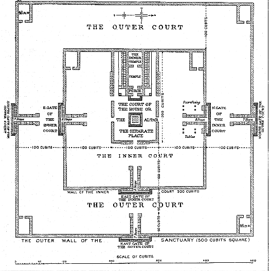
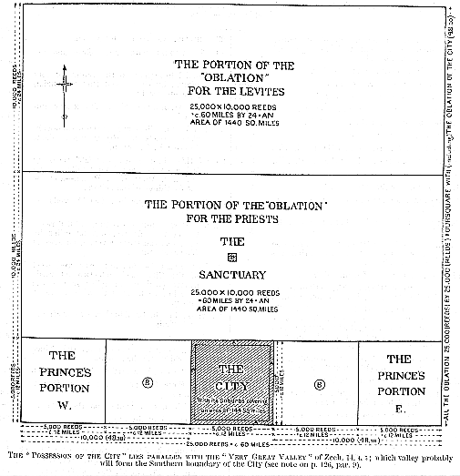

88. THE MILLENNIAL "SANCTUARY"
AND
"OBLATION" OF EZEKIEL 40-48.

NOTES OF THE "SANCTUARY" OF EZEKIEL.
- It is a mistake to speak of the wonderful series of courts
and buildings, described in the closing chapters of Ezekiel,
collectively
as the Temple. The proper term is "The Sanctuary", as it is set forth
in 45:1-4 (see plan above).
- The governing figure of the dimensions given throughout the
last eight chapters -- not only in connection with the Sanctuary, but also
in the measurements of the holy "Oblation unto Jehovah", of the Land --
is the number "5" (Ap. 10).
- The Sanctuary is in the midst of the central portion of the
middle (the Priests') portion of the "Oblation" (see block plan, p. 127).
The Altar which occupies the exact center of the Sanctuary
(not the Temple proper, see below), is thus twelve miles from the
north gate of the city, twelve miles from the southern boundary of the
Levites' portion, and thirty miles from the eastern and western boundaries
of the "Oblation" respectively.
- The Sanctuary is comprised in a great square (42:15-20) enclosed
with a wall measuring 500 reeds each way.
If the "measuring reed" = 12 ft. 6 in., then 500 reeds will be equivalent
to about nine English furlongs, or a little more than one mile square.
(*1)
- In the center of this great square we have next the boundary
wall enclosing the OUTER COURT. This wall is 12 ft. 6 in. high by
12 ft. 6 in. broad, and forms a square of 500 cubits (*2) (external measurements).
Five hundred cubits is 25.025 x 500 = 1042.7 English feet, or
about 1/5 of a mile.
- Within this is the Inner Court, a square of 300 cubits (*2)
(25.025 x 300 = 625 English feet).
- Inside the Inner Court we have the Temple (or
Palace,
Heb. heykal) Court, or the Separate Place (*3) (41:12, 13, 14, 15;
42:1, 10, 13), and the Temple-Palace itself, each occupying a space of
100 cubits = 216 feet square, and forming together a rectangle of 200 x
100 cubits ( = 432 ft. x 216 ft.).
- Finally in the midst of the "Separate Place" stands the Altar,
twelve cubits square ( = 25 ft.) on its base or "settle" of fourteen
cubits square ( = about 29 ft.).
Thus it will be seen that "the ALTAR before the HOUSE" (40:47), in the
midst of "the Separate Place", is the actual center of the Millennial Sanctuary
and worship, and not the "Building", the "House", or "Temple" immediately
to the west of it (*4). This indicates that the millennial "Temple"
is really the Palace, or Habitation of Messiah in connection with "the
City of the great King" (Ps. 48:2. Matt. 5:35), when He, as the "GLORY
of Jehovah", will from time to time visit His earthly metropolis.
At the glorious "Dedication" of the Sanctuary, of which brief mention
is made in 43:2-6, Jehovah's Glory (Messiah) enters the "House" by way
of "the gate of the Outward Sanctuary which looketh toward the East" (43:4;
44:1). This will then be closed for all purposes of general ingress
and egress; and is reserved strictly for the use of "the Prince" (the risen
David?) who, as Messiah's vicegerent (cp. 37:24, 25), will alone be permitted
to make use of it.
- A word is necessary regarding the mistake into which some
commentators have fallen with regard to the measurements of the "Oblation".
It has been assumed that these are stated, and are to be understood,
as being given in cubits, not reeds.
According to this reckoning, all the oblation (25,000 x 25,000 somethings);
and if cubits, it would represent a square of rather less than ten miles
each way. The absurdity of this view will be at once apparent when
the cubit-scale is applied to the city. This is stated (48:15, 16)
as being 5,000 x 5,000 something; if these are cubits, the
the "City of the Great King" (Ps. 48), which in every allusion to it in
the Scriptures is suggestive of magnificence and spaciousness, is reduced
to a petty area of less than four square miles (5,000 cubits
x 5,000 cubits = a square of less than two miles each way).
The point need not be labored.
5,000 reeds x 5,000 reeds give us a city twelve miles square, with an
area of 144 square miles -- dimensions of dignity and importance befitting
the metropolis of the world.
In measuring or "setting out" buildings and distances, rods and tapes
or chains are used now of recognized standardized lengths.
This is precisely what we have in 40:3; where the angelic measurer or
surveyor is presented to us "with a line of flax" ( = tape) in his hand,
and "a measuring reed" ( = a rod). Cf. 47:3.
In the block plan (p. 127) it will be seen that "the possession of the
City" is shown to the south of the Oblation. Whereas in Ps. 48:2,
which is distinctly Messianic in its fuller scope, it is stated :
"Beautiful for situation ( = elevation), the joy of the whole earth,
Is Mount Zion on the sides of the North."
(See the notes on Ps. 48:2.)
(cp. the only other places where the expression "the sides of the North"
occurs, Isa. 14:12-14; 38:6, 15; 39:2, and the note on Ps. 75:6).
That "the Possession of the City" will lie parallel with "the great
valley" cloven through the Mount of Olives and running east and west (Zech.
14:4, 5) seems clear. The "City of the Great King" will therefore
be situated in a magnificent position on the north side of this
great valley. No wonder it is spoken of as "beautiful for situation"
(elevation, or extension). As the original Zion towered above the
Kidron Valley in days gone by, so in the Messianic days to come, "Zion,
the City of our God" will be seen towering in majestic elevation above
the north side of the "very great valley" that will then "cleft" east and
west, and through which the cleansing waters will flow eastward to make
the land, now desert, "blossom as the rose" (47:8 : and cp. Isa.
35).
- Difficulties are sometimes raised with regard to taking the
measurements of the "Oblation" as being in reeds not cubits,
on the score of disproportion to the "Land". It is argued that a
square block of 60 miles by 60 = 3,600 square miles, taken out of the whole
territory as divided among the Tribes, is out of all proportion to the
area of the "Holy Land". But it is nowhere stated that Palestine
as we know it now is the whole extent of the "Land".
The majority of the maps intended to show the division of the millennial
land, are presented usually with the geographical boundaries of the Holy
Land as they are now known to us, practically the same as in the days of
our Lord, with the huge square block of the "Oblation" occupying about
one-fifth of the map of Palestine.
This is an entire misconception. The promise in Genesis 15:18
yet awaits fulfillment. And if, with the statement therein that the
northern and southern boundaries of the Promised Land are the two great
rivers, the Euphrates and the Nile, then, the comparison of this with Ezek.
47:20 gives us the western boundary, viz. the "Great Sea" (Mediterranean).
This leaves the eastern boundary to be accounted for; and the possibility
is that "the East Sea" of verse 18 is the Persian Gulf, at the head
of which is the northern boundary (the Euphrates) will end. As "the
tongue of the Egyptian sea" will be utterly destroyed "in that day" (Isa.
11:15), this amplitude, or enlargement of the area of territory promised
to Abraham on the south gives strength for the suggestion of a corresponding
extension to the east.
If this is so, then the whole of the Promised
Land will be a magnificent territory, bounded on the north by the Euphrates,
on the eat by the Indian Ocean (the east sea), on the south by the Nile,
and on the west by the Mediterranean. This will include not only
the Arabian peninsula, but the great Arabian and Syrian deserts, and the
plains of Babylonia. A glorious patrimony truly, and worthy of occupation
by the "strong nation" of Mic. 4:7, the People through whom all the nations
of the earth are yet to be blessed! See Gen. 12:3; and especially
28:14. It may be that the Twelve Tribes may be allotted special strips
or "lots" of the land on either side of the Oblation as usually shown;
but that an enormously increased territory N., E., and S., will become
"in that Day" the realization of the Promised Land is certain.
BLOCK PLAN, SHOWING "ALL THE OBLATION" (48:20).

The whole size of the "OBLATION" is 25,000 x 25,000 REEDS (48:20), and
equals about 60 ENGLISH MILES square. Divided into three main Portions
:
- The Portion for the Priests, containing
in the center the Sanctuary, The Holy Portion of the Land, 25,000 x 10,000
Reeds (45:1-4) = 60 miles by 24.
- The Portion for the Levites, 25,000 x
10,000 (45:5) = 60 miles by 24.
- The "Possession of the City", 25,000 x
5,000 (45:6) = 60 miles by 12, including the Two "Portions" for the Prince,
one on the W., the other on the E. of the City (see block plan above).
The CITY is set in the midst of the "Possession of the City", and its
dimensions are given (48:15) as 5,000 x 5,000 reeds = about 12 miles square;
thus covering an area of 144 square miles (English). Of this, 250
reeds all round are marked off as "suburbs", thus reducing the actual size
of the "City" itself to about 11 miles square, covering an area of 121
square miles (48:15-17). Verse 18 gives the length of the "possession",
to E. and W., as being 10,000 reeds each way. This manifestly includes
the "Prince's Portions" at either end. Between these portions and
the suburbs of the City lies on either side (B B) the remainder of "the
residue in length over against (i.e. alongside) the oblation of the holy
(portion)", which is evidently the "garden" portion of the City, as "the
increase (Heb. tebu'ah, 48:18) thereof shall be for food
for them that serve the City".
- The "City Portion" is therefore seen to be divided into 5 (Ap. 10) portions,
each 5,000 reeds square, or into 5 blocks of 144 English square miles each. The total area covered being 144 x 5 = 720 square miles.
- The "Priests' Portion" is one large block containing a superficial area
exactly double, viz. 1,440 square miles.
- The "Levites' Portion" is of equal size. The total area of "All
the Oblation" is therefore, in English miles, 1,440 + 1,440 + 720 = 3,600
square miles.
The above figures will enable the student to grasp fully a fact that
is often lost sight of : viz. that everything in connection with
the whole of the Oblation to Jehovah, including the City, will be planned,
as shown by these dimensions, on a "magnifical" scale. To give one
instance of the scale on which the Oblation will be "laid out" -- the nearest
point from which the outside wall of the Sanctuary, in the midst of the
Priests' portion, can be reached from the Northern Gate of the City is
11 1/2 miles. There will be no overcrowding or jerry-building in
"that day". It is not possible for us now to do more than faintly
imagine to ourselves what the City will be like; 12 miles square, perfectly
planned, with "garden" spaces on either hand occupying like areas, and
these again bounded by the Prince's "private gardens", so to speak, and
abode, of similar size.
SPECIFICATION OF "THE SANCTUARY".
And its planning out in relation to the "Oblation unto Jehovah" of the
Land and the location of the tribes.
Ezekiel 40:1-48:35.
| Order. |
|
Refs. |
| 1. |
The "Wall on the outside of the house round about" (12 ft. 6 ins. high,
and 12 ft. 6 ins. broad). |
40:5 |
| 2. |
THE EAST OUTER GATE. Details. |
6-16 |
| 3. |
THE OUTER COURT. Details. |
17-19 |
| 4. |
THE NORTH OUTER GATE. Details. |
20-22 |
| 5. |
THE NORTH AND EAST INNER GATES. |
23 |
| 6. |
THE SOUTH OUTER GATE. Details. |
24-26 |
| 7. |
THE SOUTH INNER GATE. |
27 |
| 8. |
THE INNER COURT. SOUTH GATE. Details. |
28-31 |
| 9. |
THE INNER COURT. EAST GATE. Details. |
32-34 |
| 10. |
THE INNER COURT. NORTH GATE. Details. |
35-43 |
| 11. |
CHAMBERS for the "SINGERS". |
44 |
| 12. |
CHAMBERS for the Priests in charge of the HOUSE. |
45 |
| 13. |
CHAMBERS for the Priests in charge of the ALTAR. |
46 |
| 14. |
THE ALTAR COURT (100 cubits square. See plan on p. 125) and THE
ALTAR that was before the House. |
47 |
| 15. |
The PORCH of the HOUSE. Details. |
48, 49 |
| 16. |
THE TEMPLE (Heb. heykal. Often translated Palace
: e.g. Ps. 45:8, 15). Details. |
41:1-11 |
| 17. |
THE BUILDING that was before the SEPARATE PALACE (*5) (i.e. the TEMPLE
or HOUSE itself facing the SEPARATE PLACE -- the ALTAR COURT -- 100 cubits
square = about 208 feet). Details. |
12-14 |
| 18. |
Length of the "BUILDING", including the INNER TEMPLE (100 cubits). Details. |
15 |
| 19. |
The DOOR (entrance). Details. |
16-21 |
| 20. |
The ALTAR of wood -- within the Sanctuary -- "the Table before Jehovah". |
22 |
| 21. |
The TWO DOORS (entrances) or the SANCTUARY. Details. |
23-26 |
| 22. |
THE OUTER COURT. NORTH entrance. Width 100 cubits, of which
50 cubits is occupied by the porch of the outer gate. Details. |
42:1-8 |
| 23. |
THE OUTER COURT. EAST entrance. Details. Concerning
the Priests. |
9-12 |
| 24. |
Measurements of the space separating between the Sanctuary and the
profane place : i.e. the great outer "surround" of 500 reeds square
( = a little more than a mile square) enclosed within a wall of unspecified
dimensions. |
15-20 |
| 25. |
The OUTER EAST GATE -- and the Vision of the Triumphal Fi
1000
rst Entry
of the Messiah KING into the HOUSE (when Ps. 24:7-10 will be fulfilled). |
43:1-5 |
| 26. |
JEHOVAH'S Command from "the HOUSE" giving "the LAW OF THE HOUSE". |
6-12 |
| 27. |
THE ALTAR. 12 cubits square ( = 25 ft. x 25 ft.) on its base
(settle) of 14 cubits square ( = about 29 ft. x 29 ft.). |
13-17 |
| 28. |
THE ORDINANCES OF THE ALTAR. |
18-27 |
| 29. |
The CLOSED outer EAST Gate and the reason. |
44:1-3 |
| 30. |
Ezekiel brought into the COURT OF THE HOUSE by the NORTH (the Sacrificial)
gate -- to receive. |
4 |
| 31. |
"THE ORDINANCES of the HOUSE OF JEHOVAH". |
5-31 |
| 32. |
THE LAND. The OBLATION (*6) unto Jehovah, 25,000 reeds by 10,000
reeds (about 60 miles by 24 miles). |
45:1 |
| 33. |
Of this -- THE SANCTUARY (500 reeds by 500 reeds square = about 1 mile
square) and THE MOST HOLY PLACE -- and for the dwelling of the priests. |
2-4 |
| 34. |
THE LEVITES' portion, 25,000 reeds by 10,000. |
5 |
| 35. |
THE POSSESSION of the CITY, 25,000 reeds by 5,000 reeds ( = about 60
miles by 12 miles, therefore covering an area of 720 square miles). |
6 |
| 36. |
THE PRINCE'S PORTIONS east and west of the City, each 5,000 x 5,000
reeds square ( = about 12 miles square and covering each an area of 144
square miles). |
7 |
| 37. |
The rest of the Land for Israel according to their Tribes. |
8 |
| 38. |
ORDINANCES. |
9-25 |
| 39. |
ORDINANCES for WORSHIP for the Prince (David?) and the People. |
46:1-18 |
| 40. |
The Place of Preparation of the Offerings. |
19, 20 |
| 41. |
The FOUR Corner Courts of the OUTER COURT. |
21-24 |
| 42. |
THE HEALING WATERS from the HOUSE. |
47:1-12 |
| 43. |
Boundaries of the Land. |
13-23 |
| 44. |
LOCATION of the Seven Tribes on the North side (Dan, Asher,
Naphtali, Manasseh, Ephraim, Reuben, JUDAH). |
48:1-7 |
| 45. |
JEHOVAH'S OBLATION for THE SANCTUARY and the Priests, 25,000 x 10,000
reeds. |
8-12 |
| 46. |
THE PORTION for the LEVITES. |
13, 14 |
| 47. |
THE PORTION for THE CITY (*6). |
15-19 |
| 48. |
"ALL THE OBLATION", 25,000 reeds by 25,000 reeds = 60 x 60 square miles
- an area of about 3,600 square miles. |
20 |
| 49. |
The PRINCE'S portions east and west of the City (see block plan on
p. 127). |
21, 22 |
| 50. |
LOCATION of the remaining Five Tribes -- BENJAMIN, Simeon, Issachar,
Zebulun, Gad. |
23-28 |
| 51. |
SUMMARY. |
29 |
| 52. |
"Goings out of the City" (exits) and its Gates. |
30-35- |
| 53. |
THE NAME OF THE CITY, "JEHOVAH-SHAMMAH" (JEHOVAH [is] THERE). |
-35 |
(*1) The "measuring reed" is given as being "of six cubits (long)
by the cubit and an handbreadth" (40:5; 43:13); and in 41:8 we have the
specified standard length of the reed as "a full reed of six
great cubits". This "great cubit" is therefore one cubit + one
handbreadth. Six handbreadths are reckoned to the ordinary
cubit. In this case there is one extra. So that the "great
cubit" employed in the measurements of the Sanctuary and the Land is equal
to seven handbreadths (Ap. 10). It follows therefore that
"six great cubits" = 42 (6 x 7) handbreadths. If the handbreadth
is taken as being 3.575 in., or a little more than 3 1/2 in., which is
most probably about the exact figure, then the "great cubit" is 3.575 x
7 = 25.025 in.; and "the full reed" will therefore be 25.025 x 6 = 150.150
in. This = 12.5125 English feet, or in round numbers 12 feet 6 inches.
(*2) The main dimensions given supply us with these figures, although
they are not specifically stated as in the case of the 500 reeds of 42:16-20.
(*3) The Separate Place has in its center the ALTAR and seems
to be the court for worship of "separated ones".
(*4) In the "Specification", it is a remarkable fact that the
Altar
is the item numbered 27. The whole number of "items" specified from
40:1-48:35 is 53. This gives 26 items on either side of 27
-- thus placing the Altar exactly in the midst of the angelic specification
-- as it is placed in the center of the Sanctuary.
(*5) The Separate Place. Only used here seven times
(41:12, 13, 14, 15; 42:1, 10, 13), and in Lam. 4:7 where the word is rendered
polishing.
(*6) See the Plan (to scale), and Notes on p. 127.
|